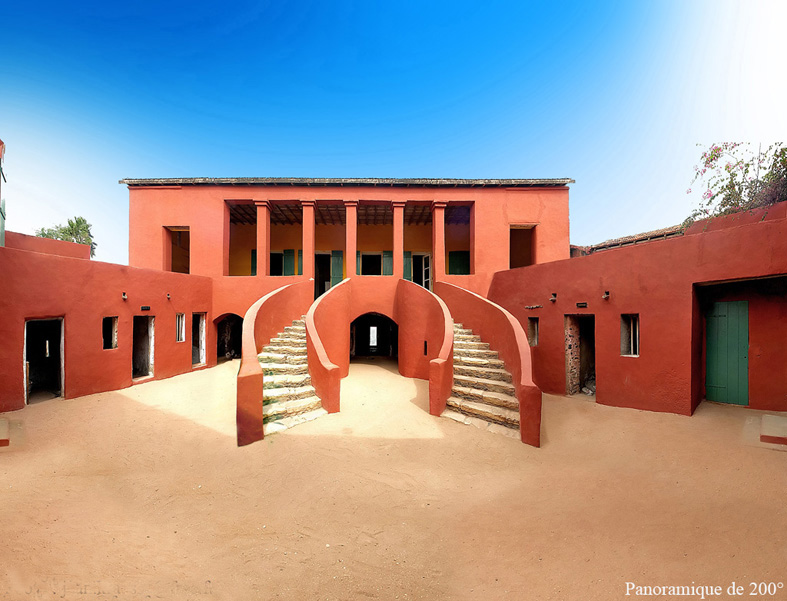
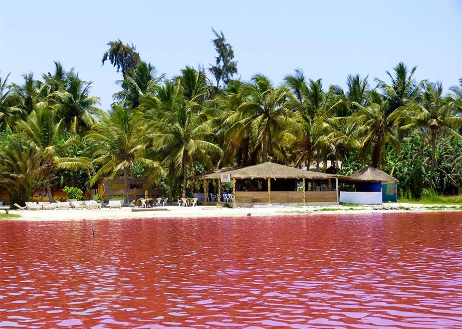

L'île de Gorée

À seulement 20 minutes de chaloupe, cette île sans voitures est un havre de paix chargé d'histoire.
Dakar offre un contraste saisissant entre histoire coloniale et merveilles de la nature.

À seulement 20 minutes de chaloupe, cette île sans voitures est un havre de paix chargé d'histoire.

Célèbre pour sa couleur unique et son pouvoir d'attraction, le Lac Rose est un endroit magnifique, c'est une étape incontournable près de Dakar.
Pour vivre l'effervescence de la ville, rien de tel que le marché Sandaga. On y trouve de tout: de l'artisanat local, de la gastronomie, de la mode .